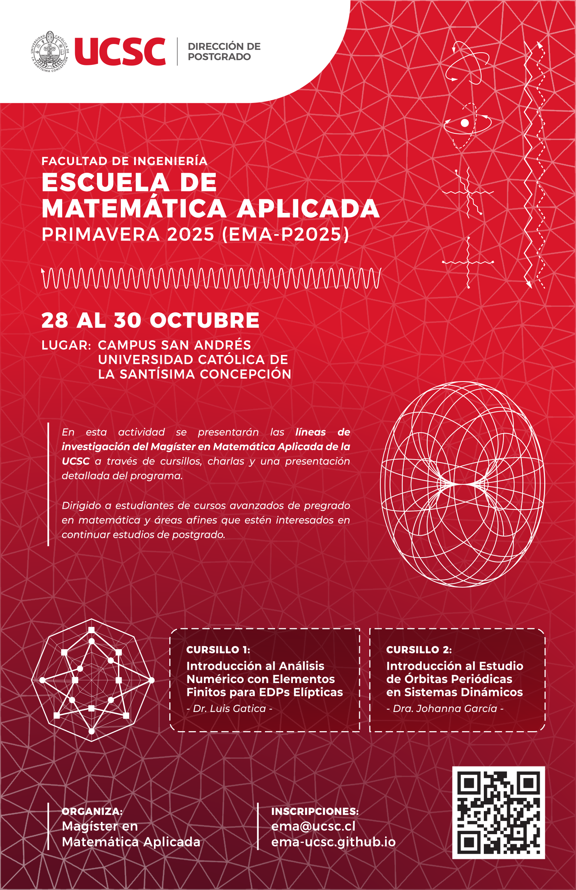

Escuela de Matemática Aplicada, Primavera 2024 (EMA-P2024) |
La Escuela de Matemática Aplicada-Primavera 2025 (EMA-P2025) es un evento organizado por el programa de postgrado Magíster en Matemática Aplicada (M2A) de la Facultad de Ingeniería de la Universidad Católica de la Santísima Concepción, Chile. Se llevará a cabo del 28 al 30 de octubre de 2025 y tiene como objetivo principal dar a conocer las líneas de investigación que actualmente se desarrollan en el programa.
La escuela está dirigida a graduados o estudiantes de los últimos semestres de Licenciatura en Matemáticas o áreas afines, así como de programas de pregrado con fuerte base matemática y que tengan interés en matricularse en un programa de postgrado que potencie su formación académica y preparación científica especializada en áreas de la Matemática Aplicada.
Se ofrecerán dos cursillos representativos de las líneas de investigación del programa: Análisis Numérico de Ecuaciones Diferenciales Parciales y Sistemas Dinámicos. Además, cuatro charlas en las cuales se presentan temas de investigación de las dos líneas desarrolladas por profesores y egresados del M2A.
|  |
Fechas importantes:Las postulaciones a becas de alojamiento están abiertas hasta el día domingo 22 de septiembre. Las postulaciones al evento están abiertas hasta el día domingo 13 de octubre. |